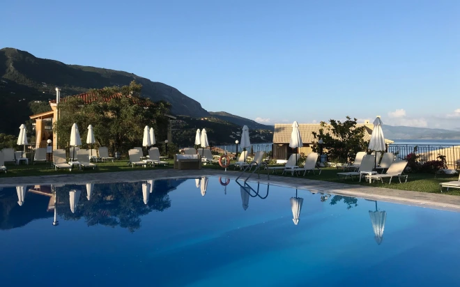
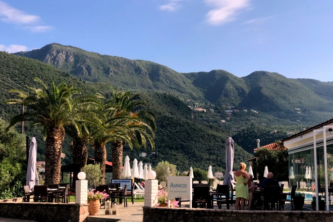
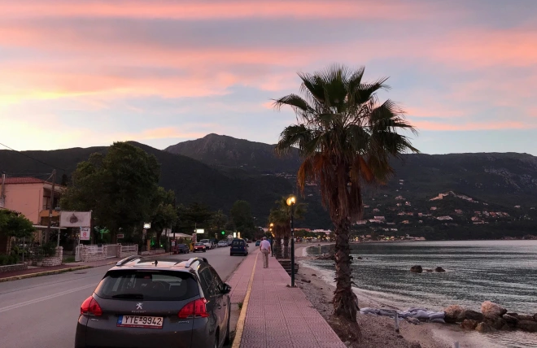
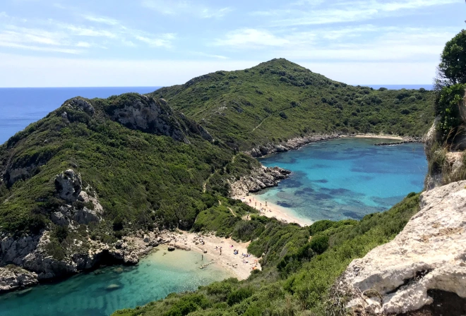
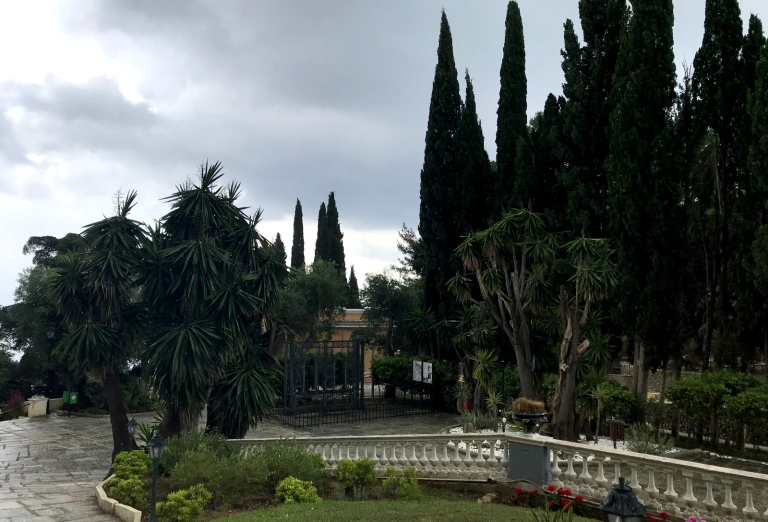
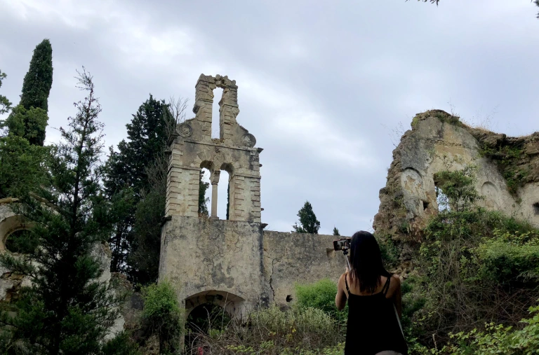
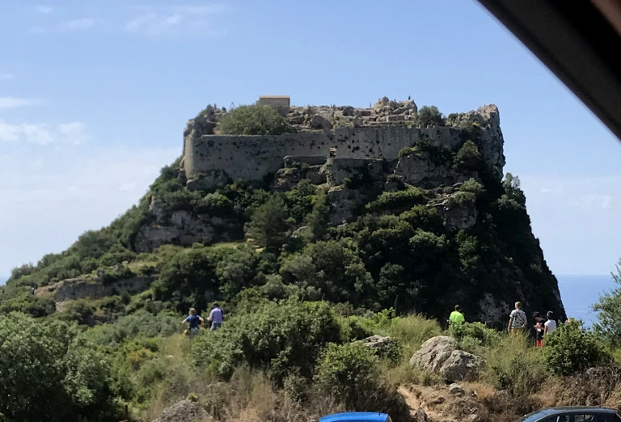

Viena smagiausių man 2018-ųjų metų patirčių – kelionė į Korfu arba kitaip dar vadinamą Kerkyrą (pastarasis pavadinimas populiarus tarp vietinių). Tai buvo pirmoji tokia kelionė man(daugeliu aspektų). Nedidelė sala su daugybe alyvmedžių ir ryškiažiedžių kaktusų, su siauromis gatvelėmis, uolomis ir paplūdimiais, kuriuos skalauja žydras, skaidrus, magiško grožio vanduo. Jeigu manęs paprašytų trumpai apibūdinti Korfu, būtent tokiais epitetais aš bandyčiau „nupiešti“ salos vaizdą. Sąlyginai trumpas, vos daugiau nei porą valandų trukęs skrydis iš Vilniaus ir mes jau pakeliui į savo viešbutį. Važiuojant jo link aš stebėjau gatves ir žmones jose (daugiausiai vietinius), viskas saloje man atrodė taip paprasta. Be ištaigingų namų, be blizgančių automobilių, be didelės prabangos ir, sakyčiau, su šiokia tokia betvarke. Net viešbučiai, kurių rasti buvo galima už kiekvieno kampo neatrodė labai „prašmatnūs“. 🙂
Atvykus į mūsų viešnagės vietą (apsistojome „Hotel Yannis-Corfu“), netvėriau džiaugsmu. Visų pirma, tai dėl to, kad viešbutukas nors ir nedidelis, tačiau labai jaukus, o antra, vos išėjus į kiemą galėjai džiaugtis baseinu bei horizonte besidriekiančiu kalnu. 🙂
Iki pirmosios vakarienės turėjome šiek tiek laisvo laiko, todėl išėjome pasivaikščioti po Ipsos miestelį, kuriame buvo įsikūręs mūsų viešbutis. Vaizdas pagrindinėje gatvėje man priminė video žaidimus: „GTA San Andreas” ar „Vice City”. Važiuojamoji kelio dalis, kurią nuo jūros skiria tik siauras paplūdimys bei šaligatvis, palmės, kalnas ir nuostabaus grožio dangus, kuriuo žavėjomės ne vieną vakarą… ❤
Jau kitą rytą, iš karto po pusryčių leidomės į pirmąją savarankišką ekskursiją po Korfu. Antroji kelionės diena „pradžiugino” lietumi, o niūrus dangus buvo mūsų palydovas, tačiau jau sekantį rytą oras gerokai pasitaisė ir likusį atostogų laiką galėjome džiaugtis malonia pavasario šiluma, o apie labiausiai patikusias vietas - kitose skiltyse. 🙂
Na, o jeigu įdomu, plačiau apie visą kelionę galima paskaityti mano įraše.Nesu tikra ar dėl to, kad pirmą kartą keliavau ar todėl, kad ten iš tikrųjų labai gražu, bet Korfu man paliko neišdildomą įspūdį.
P.S. Mes keliavome gegužę, tai vietiniai sakė, jog gegužė labai tam palankus mėnuo, kadangi tuo metu viskas žydi ir žaliuoja, nėra per karšta, o vėliau viskas tiesiog išdega nuo kaitros.
Štai čia vienas įsimintiniausių reginių iš kelionės - gražus ir nepakartojamas Afiono kaimelyje esantis Porto Timoni paplūdimys. Teko labai nemažai eiti pėsčiomis (iki paplūdimio siauru takeliu leidomės nuo kalno), bet buvo verta. 🙂
Kelionė link paplūdimio nebuvo tokia jau sunki vertinant tai, kad vėliau mums reikėjo į tą kalną užlipti. 😀 Na, bet kopti pasidarydavo lengviau, kai pakeldavai akis į horizontą. Gamta Korfu tikrai džiugino. Nuo viršukalnės, kurioje buvome, matėsi didžiulis ir labai, labai gražus Agios Georgios paplūdimys.
Pirmiausia turėjome išvyka į Gastouri gyvenvietę, kuri yra žymi giliomis tradicijomis ir, kurioje randasi turistų pamėgti Achilleono rūmai. Jie buvo pastatyti Austrų imperatorės Elžbietos Bavarietės (Sissi), jos žuvusio sūnaus garbei (girdėjome ir kitą versiją: juos Sissi pastatė norėdama pasislėpti nuo Austrijos teismo). Didžiausią įspūdį man paliko rūmų sodas ir aplinka.
Vėliau vykome ieškoti Švč. Mergelės Marijos vienuolyno ir nors teko šiek tiek paklaidžioti, mes jį suradome. Man, kaip prijaučiančiai tokioms vietoms, (t.y. visokiems griuvėsiams, apleistiems pastatams ir panašiai) – šis objektas labai tiko ir patiko. 🙂
Ir nors vienuolynas išties žavus, tačiau didesnį įspūdį man paliko kitas objektas. Nuostabioje vietoje, pačioje uolos viršukalnėje esanti Angelokastro (Angelų) pilis. Tikrai verta aplankyti.
Mano manymu ši vieta taip pat yra verta atskiro paminėjimo, tai - senovinis kaimelis Peritija.
Nedidelė, įkurta slėnyje ir gerokai apgriuvusi Peritija yra turistų pamėgta ir lankoma vieta, kai mes ten nuvykome, susitikome jų kelias grupes. Vieni slampinėjo gatvelėmis, kiti – sėdėjo tavernose, kurių čia matėme net dvi. 🙂Iš akmenų pastatyti nameliai su jau įgriuvusiais stogais, smėlėti ir tais pačiais akmenimis grįsti takai, bei pievos visur, kur tik pažvelgsi… Tokia ta Peritija mano akimis.